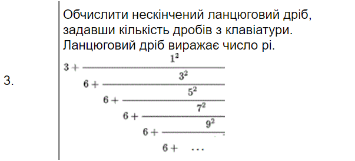
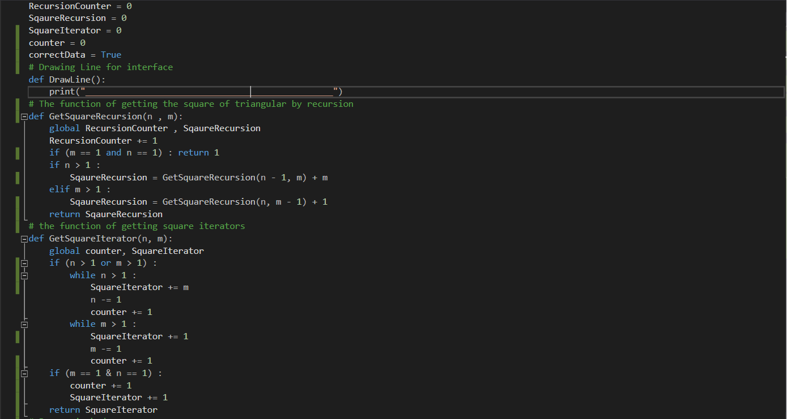
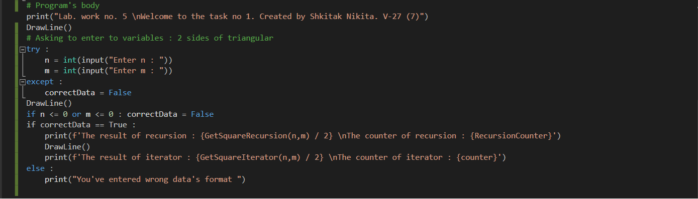
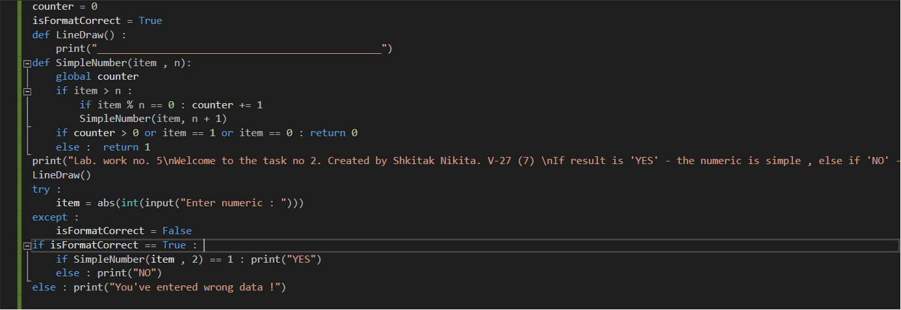
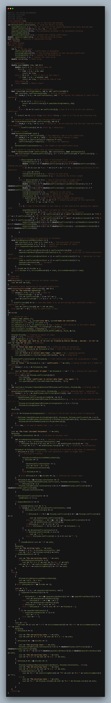
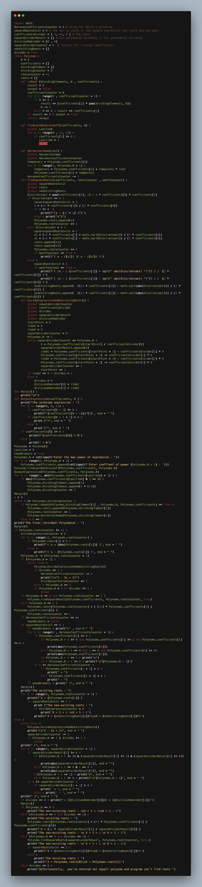
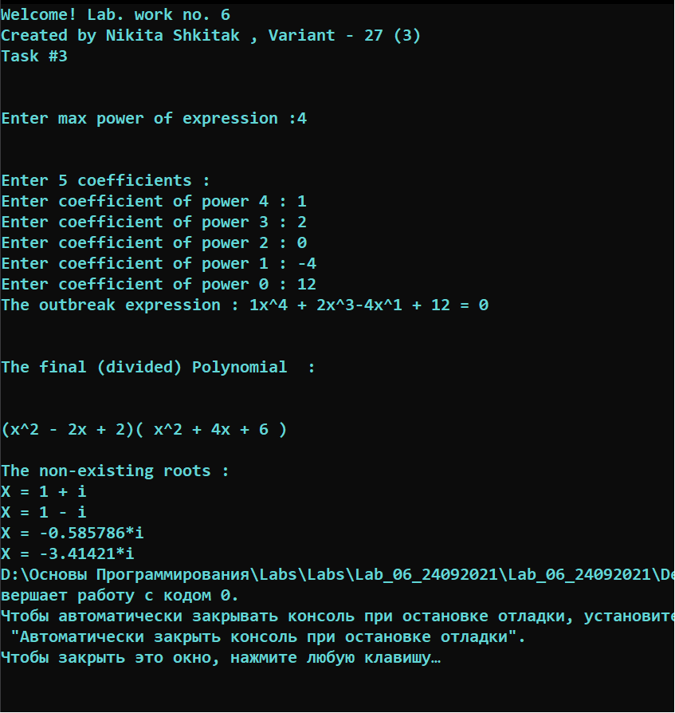
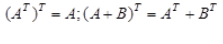
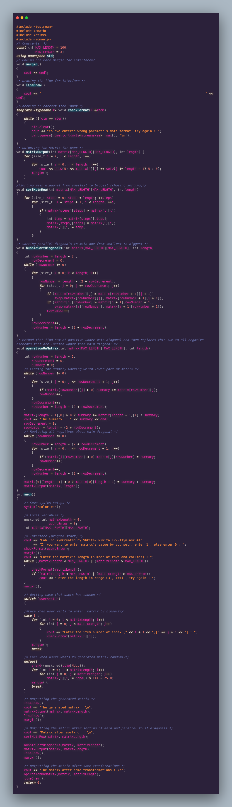

Київський національний університет імені Тараса Шевченка
Кафедра програмних систем і технологій
Звіт про виконання лабораторних робіт з дисципліни
"Основи об'єктно-орієнтованого програмування"
Виконав: студент 1 курсу
Група ІПЗ-11-1
Шкітак Нікіта Ярославович
Викладачі: Ковалюк Т. В.
Київ-2021
Лабораторна робота №1
Мета роботи:
Прості обчислення з перетворенням типів даних. Метод Parse;
Прості арифметичні вирази;
Клас Convert;
Перетворення з арифметичного типу в тип string. Метод ToString
Умова задачі
Написати в C# консольний застосунок, що реалізує завдання згідно з варіантом.
Виконання пункту 1 завдання вимагає використання методів класу Console.
Виконання пункту 2 завдання вимагає використання методів класу Math.
Виконання пункту 3 завдання вимагає використання оператору if.
Виконання пункту 4 завдання вимагає використання оператору switch.
Виконання пункту 5 завдання вимагає використання оператору циклу.
Аналіз задачі
Для вирішення завдання №1 :
Буде використовуватися методи класів Console (WriteLine, Write, ReadLine) та Convert(ToInt32, TryParse). Користувач вписує власні дані в консоль і потім програма буде виводити це на екран. Також для знаходження площі прямокутника, будемо її знаходити за формулою : S = a * b
Для вирішення завдання №2 :
Для знаходження рузультату даної функції ( x=(1-a)*(a+b)/(a-b)+∛(sin〖a^2 〗 )) будемо використовувати методи класу Math (Pow, Sqrt) та методи класів Console (WriteLine, Write, ReadLine)
Для вирішення завдання №3 :
Для знаходження результату будемо використовувати умовні оператори if , if else , else та методи класів Console (WriteLine, Write, ReadLine)
Для вирішення завдання №4 :
Використовувати одновимірні статичні масиви, цикли та методи класів Console (WriteLine, Write, ReadLine)
Для вирішення завдання №5 :
Використовувати цикли, методи класів Console (WriteLine, Write, ReadLine) а також будемо використовувати String так як за умовою використання одновимірних масивів заборонено
В програмі результат = 28, що приблизно дорівнює нище вказаному результату з малюнку
Завдання №3
Як ми можемо побачити , умова виконується (при б = 0 , результат = 0)
Завдання №4
Як ми знаємо, першим кольором веселки є ЧЕРВОНИЙ, тому якщо ми вводимо в програмі 1 - то виводе саме червоний, тому можемо зробити висновок, що програма працює коректно
Завдання №5
Як ми можемо побачити програма коректно знаходить мінімальне значення оцінки та середнє арифметичне без максимального та мінімального. Результати співпали з калькулятором
Висновок
Було написано 6 методів класу Program для виконання поставлених умов. Труднощів при написані коду не виникло. Виконані всі поставлені умови.
Результати виконання програм були перевірені за допомогою онлайн і звичайного калькулятора (Photomath);
Програма працює правильно, результати виконання збігаються з перевіреними, отже їм можнп довіряти і використовувати код при необхідності.
Task №1
#define _CRT_SECURE_NO_WARNINGS
#include <iostream>
#include <string>
#include <conio.h>
#include <stdio.h>
using namespace std;
// functions
void LineDraw() { cout << endl << "---------------------------\n"; } // Creating a method of drawing a row :
int main()
{
// Standart variables to show the methods of the first task :
char exampleChar, randomText[100];
LineDraw();
cout << "Welcome To the task #1! \nIPZ-11_1 Shkitak Nikita" << endl; // Cтандартный выходной поток (stdout в С)
LineDraw();
// Printf and scanf commands
cout << "Enter a SYMBOL to use commands 'printf' and 'scanf'" << endl;
scanf("%c", &exampleChar); // We have to set '&' element in front of the variable :
cout << "____RESULT____ (using printf) : ";
printf("%c", exampleChar); // Printf and scanf using for getting elements , judging by the format issue :
// Cerr command
LineDraw();
cout << "Enter a SYMBOL to use command of output 'cerr'" << endl;
cin >> exampleChar; // Cтандартный входной поток (stdin в С)
cerr << "____RESULT____ (using cerr) : " << exampleChar << endl; // Cerr using as a stream method of warning about errors
//(стандартный поток вывода об ошибках, не буфферизуется в отличии clog and cout )
// Clog command
LineDraw();
cout << "Enter a SYMBOL to use command of output 'clog' " << endl;
cin >> exampleChar; // Getting char as example
clog << "____RESULT____ (using clog) : " << exampleChar << endl; // Usually using for a logging (everything you want) :
//Putch and Getch :
LineDraw();
cout << "_putch and _getch function using" << endl; // Interface
cout << "Enter a SYMBOL to show the using of _getch function " << endl;
_cputs("____RESULT____ (using _putch) : ");
_putch(_getch()); // Putch ,getch fuctions
//Getchar and putchar functions using
LineDraw();
cout << "Getchar and putchar functions using , enter a SYMBOL " << endl;
cin.ignore(1000, '\n'); // We are using this function to let getchar work
exampleChar = getchar(); // Эта функция эквивалентна getc, которая принимает стандартный поток ввода в качестве аргумента.
cout << "____RESULT____ (using putchar method) : ";
putchar(exampleChar); // This function is used to output items
// _cscanf_s and _cprintf_s functions using :
LineDraw();
cout << "Enter a SYMBOL to use _cscanf and _csprint function " << endl;
_cscanf_s("%s", randomText, _countof(randomText)); // _cscanf_s function
cout << endl << "____RESULT____ (using _cprintf) :";
_cprintf("%s", randomText); // _cprintf function
// Gets_s and puts
LineDraw();
cout << "Gets_s and Puts functions using , enter random SYMBOLS" << endl;
cin.ignore(1000, '\n'); // Ignore to let next function work
gets_s(randomText); // Gettign items to array
cout << "____RESULT____ (using puts) : ";
puts(randomText); // This function is used to output items
//_Cputs() _cgets()
LineDraw();
cout << "_Cputs() and _cgets() functions using , enter a random SYMBOL" << endl; // Interface
cin >> randomText; // Getting a text to output it with _cputs()
cout << "____RESULT____ (using _Cputs method) : ";
_cputs(randomText); // This function is used to output items
cout << endl << "_cgets function _____DOESN'T WORK_____";
// Sprintf_s functions
LineDraw();
cout << "Sprintf_s functions using" << endl;
char buffer[20]; // Setting new Array buffer []
int X, Y; // Var
cout << "Enter parametrs X and Y to create an expression : " ;
cin >> X >> Y;
sprintf_s(buffer, "%d + %d = %d", X, Y, X + Y); // Setting to array the expression
printf("____RESULT____ (using sprintf_s function), (using X and Y) : %s \n" , buffer); // Output the result of new generated array
// Sscanf_s functions
LineDraw();
cout << "Sscanf_s functions using" << endl;
char sentence[] = "Robbert older that Max ", output[20]; // The basic string and new output Array
cout << sentence << " - Is the the basic sentence" << endl;
int age; // Age setting
cout << "Enter age to create a sentence : ";
cin >> age;
sscanf_s(sentence, "%s ,%*s, %d", output, 20, &age); // Scanf function getting the first word and set it to the output[]
printf("____RESULT____ (using sscanf_s function) : %s is %d years old \n", output, age); // Output with printf function
LineDraw();
system("pause"); // System Pause
}
Task №2
#define _CRT_SECURE_NO_WARNINGS
#include <iostream>
#include <string>
#include <cmath>
#include <conio.h>
#include <stdio.h>
#include <fstream>
using namespace std;
// functions
void LineDraw() { cout << endl << "---------------------------\n"; } // Creating a method of drawing a row :
int main()
{
// #2 Task
LineDraw();
double A, B, C, D = 0; // Creating 4 vars :
cout << "Welcome To the task #2 ! Shkitak Nikita IPZ-11_1" << endl;
cout << " Enter A, B, C, D parametrs, please" << endl;
while (!(cin >> A >> B >> C >> D)) {
cin.clear();
cout << "You've entered wrong parametrs" << endl;
cin.ignore(numeric_limits<streamsize>::max(), '\n');
} // Input
double X = (pow(exp(1), A) * cos(B / 2 + D / C)) / (D * C + sin(C)); // Solving
cout << "The result is : " << X << endl; // Output
}
Task №3
#define _CRT_SECURE_NO_WARNINGS
#include <iostream>
#include <string>
#include <cmath>
#include <conio.h>
#include <stdio.h>
#include <fstream>
using namespace std;
// functions
void LineDraw() { cout << endl << "---------------------------\n"; } // Creating a method of drawing a row :
int main()
{
// #3 Task
LineDraw();
cout << "Welcome To the task #3 ! (Variant 27) Shkitak Nikita IPZ-11_1" << endl;
unsigned int a, b, c = 0; // Creating 3 unsigned vars :
requires :
LineDraw();
cout << " Enter a, b, c (int) parametrs, please" << endl;
while (!(cin >> a >> b >> c)) {
cin.clear();
cout << "You've entered wrong parametrs";
cin.ignore(numeric_limits<streamsize>::max(), '\n');
}
// Input
float p = (a + b + c) / 2, // Solving P / 2
pre_S = (p * (p - a) * (p - b) * (p - c)); // First stage of Herone's formula
if (pre_S <= NULL) { // Checking if the triangular exists :
cout << "Such triangular doesn't exist" << endl << "Try again..." << endl;
cout << "If you want to stop programm , write 'q' else press any key..." << endl;
char item = NULL;
while (!(cin >> item)) {
cin.clear();
cout << "You've entered a wrong parametr" << endl;
cin.ignore(numeric_limits<streamsize>::max(), '\n');
}
if (item == 'q' | item == 'Q') exit(0);
else goto requires;
}
else cout << "The S is : " << sqrt(pre_S) << " sm"; // Checking if the triangular exists :
return 0;
}
Лабораторна робота №2
Мета роботи:
Робота з масивами в C#
Оператор foreach
Генерація випадкових чисел
Робота з математичними функціями
Лінійний пошук
Двійковий пошук
Умова задачі
Аналіз задачі
Для виконання завданнь :
Для виконання завдання будемо : використовувати методи класів Console, Convert в процесі введення та виведення даних. Реалізовути перераховані функції. Викликати функції за допомогою меню, застосувавши оператор вибору switch. Для створення масиву і матриці використовувати методи класу Random. Для виконання математичних обчислень використовувати клас Math
Блок-схема завдання №1 :
Блок-схема завдання №2 :
Код програми
Код для завдання №1
Код для завдання №2
Результати всіх завдань
Результат завдання №1
Результат завдання №2
Аналіз достовірності результатів
Аналіз завдання №1
В завданні номер №1 за допомогою логічних операторів ми повинні були порахувати значення змінної result відносно значення змінних a i b
Роздивимося три випадки :
Якщо і а і b більше 0, то result = a^3 / b^2. Відповідно , роздивимося випадок коли а = 2 , b = 1. Якщо підставити дані параметри , то отримаємо 8, перевіримо в програмі :
Якщо а - більше 0, b - менше 0, то result = a / b. Відповідно , роздивимося випадок коли а = 2 , b = -1. Якщо підставити дані параметри , то отримаємо -2, перевіримо в програмі :
Якщо b дорівнює 0, то result = a^2. Відповідно , роздивимося випадок коли а = 2 , b = 0. Якщо підставити дані параметри , то отримаємо 4, перевіримо в програмі :
В інших випадках ми отримуємо result = 1 , перевіримо :
Так як всі дані сходяться , то ми можемо зробити висновок, що програма працює коректно .
Аналіз завдання №2
В завданні номер №2 нам потрібно було отримати 3 змінні , треба знайти найбільше та найменше значення по модулю , а також виконавши певні математичні перетворення - знайти найбільше нове число. Перевіримо, чи працює програма правильно :
Введемо значення 1, 2, 3 , відповідно мінімальне число - 1 , а максимальне - 3.
Як ми можемо побачити, максимальне та мінімальні числа були знайденні вірно.
Подивимось на другий масив, котрий приймає змінні з певними математичними перетвореннями : x+y+z (1 + 2 + 3) = 6; xy-xz+yz (2 - 3 + 6) = 5; x*y*z (2*3*1) = 6; Як ми можемо побачити , перетворення були виконані вірно. Також програма знайшла вірне максимальне значення з новоутворених - 6
Так як максимальні і мінмальне значення знаходяться з тим що написано в програмі, то ми можемо зробити висновок, що програма працює коректно .
Висновок
Було написано 2 програми для виконання поставлених умов. Ніяких труднощів при написанні коду не виникло. Виконані всі поставленні умови
Результат виконання програм були перевірені методом підстановки певних аргументів
Під час виконання лабораторної роботи №2 , були реалізувувані такі логічні функції : if , else if, else, '<' , '>' .
Програми працюють правильно, результати виконання збігаються з перевіреними , отже їм можна довіряти і використовувати при необхідності.
Task №1
#include <cmath>
#include <iostream>
using namespace std;
void ShowLine() { cout << "------------------------ \n"; } // function on drawing a line :
int main()
{
// Task #1
cout << "Welcome To the task #1 ! (Variant 27) Shkitak Nikita IPZ-11_1" << endl;
ShowLine();
long double a, b, result; // Creating variables and Arrays :
cout << "Task #1";
cout << endl << "Enter the A , B parametr : " << endl; // Asking to enter a parametr A :
while (!(cin >> a >> b)) {
cin.clear();
cout << "You've entered wrong parametrs \n";
cout << endl << "Enter the A , B parametr : " << endl;
cin.ignore(numeric_limits<streamsize>::max(), '\n');
}
// Main part
if (b > 0 && a > 0) result = pow(a, 3) / pow(b, 2); // The condition of solving the taks #1 :
else if (b < 0 && a > 0) result = a / b;
else if (b == 0) result = pow(a, 2);
else result = 1;
cout << "The result is : " << result << endl; // Output result :
}
Task #2
#include <cmath>
#include <iostream>
using namespace std;
void ShowLine() { cout << "------------------------ \n"; } // function on drawing a line :
int main()
{
cout << "Welcome To the task #2 ! (Variant 27) Shkitak Nikita IPZ-11_1" << endl;
ShowLine();
int min, max, // Creating variables and Arrays :
numbers[3], modifyNumbers[3];
// Task #2
cout << "Task #2" << endl;
// Input
cout << "Enter the X , Y, Z parametr : " << endl;
while (!(cin >> numbers[0] >> numbers[1] >> numbers[2]))
{
cout << "You've entered wrong parametrs \n";
cout << "Enter the X , Y, Z parametr : " << endl;
cin.clear();
cin.ignore(numeric_limits::max(), '\n');
}
// Setting max and min variables :
max = numbers[0],
min = numbers[0];
// Getting max and min from the array :
for (size_t i = 1; i < 3; i++) {
if (abs(max) < abs(numbers[i])) max = numbers[i];
if (abs(min) > abs(numbers[i])) min = numbers[i];
}
ShowLine();
// Output the result :
cout << "The largest is (with ABS) : " << max << endl;
cout << "The lowest is (with ABS) : " << min << endl;
//modifyNumbers and setting new values :
modifyNumbers[0] = numbers[0] + numbers[1] + numbers[2],
modifyNumbers[1] = numbers[0] * numbers[1] - numbers[0] * numbers[2] + numbers[1] * numbers[2],
modifyNumbers[2] = numbers[0] * numbers[1] * numbers[2];
ShowLine();
// Showing a new modified array to the user :
cout << " A modified array : " << endl;
for (size_t i = 0; i < 3; i++)
cout << "- Element #" << i + 1 << " : " << modifyNumbers[i] << endl;
// Setting new max value :
max = modifyNumbers[0];
// Getting the biggest value of a new array :
for (size_t i = 1; i < 3; i++)
if (max < modifyNumbers[i]) max = modifyNumbers[i];
ShowLine();
// Output result :
cout << "The largest is : " << max << endl;
}
Лабораторна робота №3
Мета роботи:
Вивчити особливості циклічних обчислювальних процесів
Опанувати технологію використання операторів циклів
Навчитися розробляти алгоритми та програми циклічних процесів
Умова задачі
Завдання
Знайти суму ряду по заданій формулі :
Аналіз задачі
Аналіз завдання
З даного рівняння ми можемо побачити , що зовнішня сума рахується при Х є від 1 до 5 , тому доцільно використовувати цикл FOR.
Зовнішня сума рахується від 0 до нескінченності , отже буде доцільно використовувати цикл WHILE
Для того, щоб цикл не відбувався безкінечну кількість раз, ми вводимо поняття точності , а також досліджуємо кожний новий елемент внутрішньої суми на дотирмання певних обмежень : якщо за модулем він вийшов з діапазону від 10^-38 до 10^38, що означає Overflow або якщо ж поточий елемент менше заданої точності, то ми переходимо до наступного елемента зовнішньої суми (Збільшуємо Х на 1)
Варто зазначити , що ми накладаємо модуль на елемент при перевірці так як в залежності від порядку елемента К (внутрішньої суми) значення буде змінювати свій знак (при к - непарні - буде значення елементу менше 0) , відповідно при парних значення - більше
Опис алгоритму розв'язання задач
Для виконання завдання:
Під'єднуємо бібліотеки cmath , iomanip для використання математичних операцій , а також для більш зручного виводу даних
Створюємо нові змінні sum = 0 , number , nextNumber, error , k
Просимо ввести значення error - мінімально допустимого числа (точність), також перевіряємо дану змінну на правильність введення формату за допомогою циклу while
Створюємо самостійно дві функції : функція по знаходженню факторіала та функція для возведення числа в ступінь ( Factorial() , CustomPow() відповідно )
За допомого циклу for знаходимо суму , що буде складатися з п'яти елементів. Дані п'ять елементів будуть рахуватися циклом while у вигляді також суми с поточних елементів , що є результатом виразу, даного в умові
Знаходимо суму циклу, додаючи поточний елементу до змінної sum (sum += number)
Виводимо поточне значення суми, елемент K, X, та елемент, який додавали до суми (number)
За допомогою логічного оператора if ми перевіряємо чи поточний елемент внутрішньої суми не більше error , якщо ж быльше , то ми зупиняємо цикл while
Якщо ж попередня умова виконується , тоді знаходимо значення наступного елементу (nextNumber) після поточного , якщо значення виходить за встановленні діапазони , то ми завершуємо работу цикла while с елементом Х , виводимо повідомлення , що відбувається переповнення (Overflow) і починаємо новий цикл , вже працюючи з елементом ( Х + 1 )
Після виконання циклу for виводимо значення суми sum
Блок-схема розв'язку задачи №1
Блок-схема завдання №1 :
Код програми
Код завдання
Результати завдання
Результат завдання №1
Аналіз достовірності результатів
Аналіз завдання
Для достовірності роздивимося випадок коли у нас Х = 1, відповідно , значення суми співпадає з результатом онлайн калькулятора, через що ми можемо зробити висновок , що програма працює коректно. При досягненні заданих користувачем точності та граничних значень (від 10^-38 до 10^38) програма зупиняється, в даному прикладу точність задана менше ніж граничні значення, тому вона ніяк не впливає на суму ряду
Висновок
Було написано програму, яка розраховує суму ряду. Виконано всі поставлені умови, труднощів не виникло;
Результати виконання були перевірені підстановкою значень, а також за допомогою калькулятора (Сума ряду онлайн);
Програма працює правильно, результати виконання збігаються з перевіреними, при досягненні одного з "кінців" розрахунку програма завершується. Отже їй можна довіряти і використовувати при необхідності.
Task №1
#include <cmath>
#include <iostream>
#include <iomanip>
using namespace std;
double Factorial(int item) { // Calculating factorial :
long double factorial = 1; // base factorial
for (size_t i = 1; i <= item; i++)
factorial *= i; // Calculating factorial :
return factorial; // Return factorial
}
long double CustomPow(double X, int N) // Custom power function :
{
long double result = 1; // Setting a base var
if (N > 0) // Case if the n > 0
for (int i = 0; i < N; i++)
result *= X;
else if (N < 0) // Case if the n is less than 1
for (int i = 0; i < abs(N); i++)
result /= X;
else return 1;
return result; // Return resutl
}
// Function to draw interface :
void LineDraw() { cout << "============================================================= ==========================================================" << endl; }
void OverflowDraw(){ cout << "=============================================== Overflow ==========================================================" << endl; }
int main()
{
cout << "Lab work no 3" << endl; // Interface :
cout << "Nikita Shkita IPZ-11-1, Variant 27 (5)" << endl; // Interface :
double sum = 0, number, nextNumber, error; // Setting new variables :
long int k;
cout << "Enter error item (accuracy) , please" << endl;
while (!(cin >> error)) // Checking error on correct format :
{
cin.clear(); // Clearing cin stream
cout << "You've entered a wrong Error, try again : " << endl; // Output error message
cin.ignore(numeric_limits<streamsize>::max(), '\n'); // Stopping while
}
cout << " 5 Infinity" << endl; // Interface of a task :
cout << "SUM( SUM( ( (-1)^k * x^(k+2) ) / ( (k + 1) * (k + 2)! ) ) )" << endl;
cout << "x=1 k=0" << endl;
LineDraw();
cout << setw(20) << "X" << setw(20) << "K" << setw(20) << "NUMBER" << setw(20) << "SUM" << setw(20) << endl; // Drawing interface :
LineDraw();
for (size_t x = 1; x <= 5; x++) // Calculating the sum :
{
k = 0, number = 1, nextNumber = 1; // Setting new vars
while (abs(nextNumber) < CustomPow(10, 38) && abs(nextNumber) > CustomPow(10, -38)) // Condition of working 'while' :
{
number = (CustomPow(-1, k) * CustomPow(x, k + 2)) / ((k + 1.0) * Factorial(k + 2)); // Item to calculate under SUM :
if (fabs(number) < error && k > 0) // Case if the error is lower than is allowed
{
LineDraw(); // Interface drawing
break; // Stopping while :
}
sum += number; // Sum calculating
cout << setw(20) << x << setw(20) << k << setw(20) << number << setw(20) << sum << setw(20) << endl; // Drawing a table item :
k++; // Increment :
nextNumber = (CustomPow(-1, k) * CustomPow(x, k + 2)) / ((k + 1.0) * Factorial(k + 2)); // Item to calculate under SUM :
}
if (abs(nextNumber) > CustomPow(10, 38) || abs(nextNumber) < CustomPow(10, -38))
OverflowDraw(); // Showing that variable is overflow :
}
cout << "The sum is = " << fixed << setprecision(15) << sum << endl; // The result :
}
Лабораторна робота №4
Мета роботи:
Вивчити особливості циклічних обчислювальних процесів з розгалуженнями
Опанувати технологію рекурентних обчислень
Навчитися розробляти алгоритми та програми розвинення функцій у ряди
Умова задачі
Завдання №1
Обчислити значення функції, розвинувши її у ряд Маклорена (або Тейлора) з табличним поданням результатів розрахунків. Завдання подані в таблиці 4.2 по варіантах. Розрахунок суми ряду запрограмувати функцією користувача, використавши рекурентні співвідношення згідно з таблицею , що подана на вкладці "Теоретичні відомості".
Завдання №2
Обчислити ланцюгові дроби, степеневі ряди, розв'язати комбінаторні задачі відповідно до варіантів, поданих в таблиці

Аналіз задач
Аналіз завдання №1:
Для знаходження кореня ми будемо використовувати еквівалентну функцію , розвинуту у ряд Тейлора
Дослідивши дані нам вирази ми можемо сказати , що при умові коли Х є [-1; 1), значення виразу при Х є [-1; 0] будуть давати під корнем від'ємне чило, або 0 , на який ми будемо ділити чисельник, тому ОДЗ : Х є (0; 2]
В завданні ми використовуємо рекурентні співвідношення, які відбуваються доки різниця між двома проміжними елементами не буде менше ніж задана точність , тому буде доречно використовувати цикл Do While
Також за умовою задачі при різних Х ми знаходимо значення різних виразів ,тому будемо використовувати логічний оператор IF для того щоб програма працювала коректно відносно певного значення Х
Так як за умовою після кожної операції ми збільшуємо значення Х на заданий користувачем крок, то будемо використовувати цикл FOR для того щоб знаходити значення виразів відносно новоутвореного Х.
Аналіз завдання №2:
Так як у нас нескінечний дріб , то ми будемо виконувати певні дії циклічно поки за заданої умови, тому буде доцільно використовувати WHILE
Також для виконання певних логічних операцій ми будемо використовувати логічний оператор IF
Опис алгоритму розв'язання задач
Алгоритм виконання завдання №1:
Під'єднуємо бібліотеки cmath , iomanip для використання математичних операцій , а також для більш зручного виводу даних
Використовуючи метод розвинення у ряд Тейлор створюємо функцію SQRT() по знаходженню корення з числа
Cтворюємо змінні x, y, error = 0, step = 0 , це початкове значення , кінцеве значення , мінімальне значення поточного елементу (похибка) та крок, на який буде збільшуватися значення X
Просимо ввести значення всіх 4 змінних у консоль
За допомогою циклу WHILE ми перевіряємо чи всі значення були введені у вірному форматі
За допомогою логічного оператора IF ми перевіряємо яке значення Х (більше чи менше 1) , відповідно до результату ми виконуємо певні операції над числом Х , виводячи проміжні результати , використовуючи цикл FOR
Так як у нас ОДЗ : Х є (0; 2] , то при значеннях Х менше 0 будемо виводити "Function is not defined" замість значень функції
Алгоритм виконання завдання №2:
Під'єднуємо бібліотеки cmath , iomanip для використання математичних операцій , а також для більш зручного виводу даних
Cтворюємо змінні Item, count , це змінна над якою ми будемо проводити операції з нескінченним дробом , а також кількість операцій дробу , відповідно
Знаходимо значення останнього змаменника у бескінечному дробу
За допомогою рекурентних співвідношень, використовуючи цикл WHILE знаходимо значення Усього дробу
Додаємо до значення дробу 3 і отримуємо кінцеве значення змінної Item , що приблизно дорівнює PI
За допомогою функції setprecision() виводимо 50 знаків після крапки у дробному числі Item
Блок-схема розв'язку задачи №1
Блок-схема завдання №1 :
Блок-схема розв'язку задачи №2
Блок-схема завдання №2 :
Код програми
Код завдання №1
Код завдання №2
Результати завдання
Результат завдання №1
Результат завдання №2
Аналіз достовірності результатів
Аналіз завдання #1
Як ми можемо побачити с демонстрації роботи програми на зображенні похибка між результатами виразів , які ми шукали використовуючи в одному випадку метод розвинення у ряд Тейлора , а в іншому - стандартну функцію кореня - мінімальні . Також , підставивши вираз у гугл-калькулятор - ми отримаємо ідентичний результат як і в програмі, с чого можна зробити висновок , що програма працює вірно.
Аналіз завдання #2
Як ми можемо побачити результат програми та значення числа ПІ ідентичні , с чого ми можемо зробити висновок , що програма працює коректно.
Значення числа ПІ :
3,1415926535897932384626433832795…
Висновок
Було написано дві програми :
1) Перша - знаходить значення виразу , в яких є функція "Корінь", використовуючи метод розвинення у ряд Тейлора 2) Друга - знаходить значення нескінечного дробу. Виконано всі поставлені умови, труднощів не виникло;
Результати виконання були перевірені підстановкою значень, а також за допомогою різних калькуляторів (Photomath, Google);
Програми працють правильно, результати виконання збігаються з перевіреними, при досягненні заданої точності або кількості операцій над змінною - програма завершується. Отже їй можна довіряти і використовувати при необхідності
Task №1
#include <cmath>
#include <iostream>
#include <iomanip>
using namespace std;
void LineDraw() { cout << "__________________________________________________________________" << endl; } // Linedraw function
long double SQRT(long double x, long double ERROR) { // Custom function to find square
double itemY(1),itemY0(1); // setting first and second items
do
{
itemY0 = itemY;
itemY = 0.5 * (itemY0 + x / itemY0); // Finding square of x, using tailor's strings
} while (fabs(itemY - itemY0) > ERROR); // The condition of accuracy
return itemY; // return result
}
int main()
{
double x, y, error = 0, step = 0; // Creating new variables
cout << "Lab. work no. 4" << endl; // interface
cout << "Welcome to the task no 1. Created by Shkitak Nikita. V-27 (3)" << endl; // interface
LineDraw();
cout << "if X is [1 ; 2] => Y = sqrt(15 - x^2)" << endl << "if X is [-1; 1) => Y = 1 / sqrt(x + x^2) " << endl;
cout << "Enter Xstart parametr (from -1 to 2), Xfinish parametr (from -1 to 2) , ACCURACY, STEP" << endl;
while (!(cin >> x >> y >> error >> step) || (x < -1) | (x > 2) | (y < -1) | (y > 2) | (error == 0) | (step <= 0) | (x > y)) { // Checking if data input is correct
cin.clear(); // clearing the previous cin
cout << "You've entered wrong parametrs, try again" << endl; // Output error
cin.ignore(numeric_limits<streamsize>::max(), '\n'); // ignoring to stop while's loop
}
LineDraw();
cout << setw(19) << "X" << setw(19) << "Y" << setw(21) << "STANDART" << setw(20) << "ERROR" << endl; // Outputting results
LineDraw();
if (x < 1) { // Case if x < 1
double item;
y > 1 ? item = 1 : item = y;
for (size_t i = x; x <= item + 1e-8; x += step) { // Using for to show using of custom SQRT()
if (x <= 0) cout << setw(20) << x << setw(40) << "Function is not defined." << endl;
else cout << setw(20) << x << setw(20) << 1.0 / SQRT(x + x * x, error) << setw(20) << 1.0 / sqrt(x + x * x) << setw(20) << fabs((1.0
/ SQRT(x + x * x, error)) - (1.0 / sqrt(x + x * x))) << endl;
if (round(x * 1000) / 1000 == -round(step * 1000) / 1000) // Case of machine zero :
x += step, cout << setw(20) << "0" << setw(40) << "Function is not defined." << endl;
}
}
if(x >= 1) { // Case if x >= 1
for (size_t i = x; x <= y + 1e-8; x += step) // Using for to show using of custom SQRT()
cout << setw(20) << x << setw(20) << SQRT(15 - x*x, error) << setw(20) << sqrt(15 - x * x) << setw(20) << fabs(SQRT(15 - x * x, error)
- sqrt(15 - x * x)) << endl;
}
LineDraw();
return 0;
}
Task №2
#include <cmath>
#include <iostream>
#include <iomanip>
using namespace std;
void LineDraw() { cout << "_______________________________________________________________________________________________________________" << endl; } // Linedraw function
int main()
{
long double Item; long int count; // The maximum argument in chain fractions
cout << "Lab. work no. 4" << endl; // interface
cout << "Welcome to the task no 2. Created by Shkitak Nikita. V-27 (7)" << endl; // interface
LineDraw();
cout << "Enter number of operations (integer) : "; // Asking to enter the number of operations
while (!(cin >> count)) { // Entering the count
cin.clear();
cout << "You've entered a wrong format of parametr" << endl;
cin.ignore(numeric_limits<streamsize>::max(), '\n');
}
Item = ((count * 2.0 - 1.0) * (count * 2.0 - 1.0)) / ((count * 2.0 + 1.0) * (count * 2.0 + 1.0)); // The lowest item in chain fractions
count != 1 ? Item += 6 : Item += 3; // Analising the count : if it 2+ we are adding 6 , if count = 1 we have to add 3 as in expression
count--; // Decrement as we find the lowest item in chain fractions
while (count > 0) // Calculating the expression of PI untill the last steps
{
Item = ((count * 2.0 - 1.0) * (count * 2.0 - 1.0)) / Item;
count != 1 ? Item += 6 : Item += 3; // Analising the count : if it 2+ we are adding 6 , if count = 1 we have to add 3 as in expression
count--; // Decrement
}
cout << fixed << std::setprecision(50) << "Result of endless chain fraction : " << Item << endl; // Setting precision to show that PI is founded
LineDraw(); // Interface building
}
Лабораторна робота №5
Мета роботи:
Вивчити особливості рекурсивних процесів
Опанувати технологію рекурсивних обчислень
Навчитися розробляти алгоритми та програми із застосуванням рекурсивних функцій
Умова задачі
Завдання №1
Увести з клавіатури два цілих додатних числа m>0 та n>0. Розробити рекурсивну функцію, яка обчислює площу трикутника на основі рекурентного співвідношення:
Реалізувати ітеративний варіант функції, використовуючи оператор циклу. Порівняти ефективність рекурсивної та ітеративної реалізацій, визначивши глибину рекурсії та кількість ітерацій циклу.
Завдання №2
Увести з клавіатури натуральне число n > 1. Перевірити, чи є воно простим. Програма повинна вивести слово YES, якщо число просте і NO, якщо число складене. Алгоритм повинен мати складність O (√n). Для застосування рекурсії для цієї задачі потрібно робити рекурсію за параметром, яким є дільник числа. Контрольний тест: введено число 6, отриманий результат: NO.
Аналіз задач
Аналіз завдання №1:
Так як нам потрібно знайти площу тільки по двом сторонам , а про кут між ними нічого не говориться, то sin кута = 1 , відповіно даний трикутник - прямокутний , а дві сторони - катети трикутника
Щоб знайти площу сторони трикутника повинні існувати сторони більше 0
Для знаходження результату за допомогою рекурсії , ми будемо використовувати наданий нам алгоритм , тобто при значенні параметра n більше 1 будемо додавати параметр m до кінцевого результату площі , зменшуючи параметр n
При значенні параметра m більше 1 будемо додавати до кінцевого результату площі по одиниці і зменшувати значення параметра m
Коли значення обох параметрів будуть дорівнювати 1 , ми додаємо до кінцевого результату площі ще одницю , отримуючи подвоєну площю прямокутного трикутника.
Також при виконанні вище зазначених операцій будемо рахувати глибину рекурсії , тобто кількість виконаних операцій в цілому
Для виконання даної задачі будемо використовувати два методи : знаходження площі за допомогою рекурсії та за допомогою ітераційного методу (знайдемо також кількість ітераційних операцій), для того щоб порівняти відповіді і упевнитися в їх правильності
Аналіз завдання №2:
Нам задано досліджуване число , яке треба дослідити на факт того чи є воно простим, для цього ми будемо ділити поетапно на числа які менше нього (від 2 включно до самого досліджуваного числа не включно) , якщо число ділиться хоча б на одне з запропанованих дільників , то ми робимо висновок , що число - не є простим
Але нам також треба мати на увазі, що число повинно бути додатним , не дорівнювати 0 , а також 1 (так як це число не є ні простим , ні складним)
Якщо число просте програма повинна вивести - "YES" , ящко число складне - "NO"
Створюємо функції GetSquareRecursion() та GetSquareIterator() , які будуть знаходити результати методом рекурсії та ітераційним методом , відповідно
Просимо ввести дві сторони користувачем
Перевіряємо сторони на правильність вводу за форматом , а також щоб вони не були менше або дорівнювали 0
Використовуючи вище зазначений алгоритм знаходимо значення площі трикутника та глубину рекурсії (кількість ітераційних операцій), використовуючи обидві функції
Створюємо функцію SimpleNumber() , яка буде повертати bool (1 or 0)
Просимо ввести досліджуване число
Перевіряємо його на правильність формату
Використовуючи вище зазначений алгоритм знаходимо кількість дільників (counter) досліджуваного числа
Якщо counter = 0 , функція повертає 1 , а програма виводить "YES", в іншому випадку програма виводить "NO"
Блок-схема розв'язку задачи №1
Блок-схема завдання №1 :
Блок-схема розв'язку задачи №2
Блок-схема завдання №2 :
Код програми
Код завдання №1
Код завдання №2
Код програми версії (Python)
Код завдання №1


Код завдання №2

Результати завдання
Результат завдання №1
Результат завдання №2
Аналіз достовірності результатів
Аналіз завдання #1
Підставивши значення таких двух сторон : 44 і 33 прямокутного трикутника , програма виведе нам результат (Площу) , який дорівнює 726. Такий же результат демонутрує нам і онлайн калькулятор. Тому ми можемо зробити висновок , що програма працює коректно
Аналіз завдання #2
Як ми можемо побачити число 97 просте з нижче вказаної таблиці. Програма також дослідила, що данне число просте , тому ми можемо зробити висновок, що програма працює коректно
Висновок
Було написано дві програми :
1) Перша - знаходить площу прямокутного трикутника за двома , наданами сторонами; 2) Друга - досліджує надане число на простоту; Виконано всі поставлені умови, труднощів не виникло;
Результати виконання були перевірені підстановкою значень, а також за допомогою різних калькуляторів ("Онлайн калькулятор. Площадь треугольника", Google);
Програми працюють правильно, результати виконання збігаються з перевіреними;
Навчитися розробляти алгоритми та програми із застосуванням одновимірних масивів
Умова задачі
Завдання №1
Створити одновимірний масив, кількість елементів якого ввести з клавіатури. Передбачити меню вибору способу створення масиву: введення з клавіатури або генерація псевдовипадкових чисел. Обчислити суму елементів між максимальним та мінімальними значеннями масиву. Вивести на екран максимальний, мінімальний елементи масиву, їх індекси та шукану суму елементів
Завдання №2
Створити одновимірний масив, кількість елементів якого ввести з клавіатури. Передбачити меню вибору способу створення масиву: введення з клавіатури або генерація псевдовипадкових чисел. Відсортувати масив за алгоритмом cортування гнома (Gnome Sort) та здійснити пошук в масиві за алгоритмом ітераційного бінарного пошуку . Передбачити виведення проміжних результатів в процесі виконання ітерацій сортування масиву
Завдання №3
3.3. Увести з клавіатури степінь n >2 та коефіцієнти многочлена.
Значення деяких коефіцієнтів можуть дорівнювати нулю. Знайти всі нулі многочлена і розкласти його на множники з дійсними коефіцієнтами, якщо відомий один з його нулі . Вивести на екран вирази, що є коренями многочлена.
Аналіз задач
Аналіз завдання №1:
Для виконання даного завдання ми будемо притримуватися наведенного нам алгоритму
Для виконання завдання ми будемо використовувати одновимірний статичний масив
Вводимо можливість генерувавити масив самостійно або випадковими числами
Знаходимо максимальне та мінімальне
Знаходимо суму між данними числами
Аналіз завдання №2:
Для виконання даного завдання ми будемо притримуватися наведенного нам алгоритму
Для виконання завдання ми будемо використовувати одновимірний статичний масив
Вводимо можливість генерувавити масив самостійно або випадковими числами
Будемо сортувати масив за алгоритмом сортування гнома "Gnome sort"
А також реалізуємо пошук за алгоритмом бінарного пошуку
Також повинні передбачити виведення проміжних результатів при сортуванні
Аналіз завдання №3:
Для знаходження кореів поліному ми повинні використовувати певні математичні методи : (таблиця Горнера а також теорема Безу)
Знайдемо за теоремою Безу всі раціональні корені
Далі за знайденеми кореннями використовуючи схему Горнера ми перетворюємо поліном на добуток більш менших за ступенем многочленів
Якщо залишаеться многочлен степеня більше 2 , знаходимо якщо існують раціональні корені.
Якщо ж більше немає ірраціональних коренів а у нас залишається многочлен більше 1го ступення ми знаходимо всі комлексні коренні за наданим алгоритмом та виводимо результати
Опис алгоритму розв'язання задач
Алгоритм виконання завдання №1:
Запрошуємо у користувача обрати метод створення масиву
Запрошуємо у користувача довжину масиву
Якщо користувач обирає створити самотужки то він заполняє масиви самотужки, у випадку коли він обирає автоматичне створення то ми генеруємо масив псевдовипадковими числами
Далі знаходимо максимальний та мінімальний елементи
Знаходимо суму між даними елементами ( сума знаходилася вже у відсортованному масиві , так як в умові не було уточненно за якої умови саме шукати суму тобто сумували всі елементи між мінімальним та максимальним)
Виводимо кінцеві результати
Алгоритм виконання завдання №2:
Запрошуємо у користувача обрати метод створення масиву
Запрошуємо у користувача довжину масиву
Якщо користувач обирає створити самотужки то він заполняє масиви самотужки, у випадку коли він обирає автоматичне створення то ми генеруємо масив псевдовипадковими числами
Питаємо у користувача чи бажає він бачити процес сортування масиву , якщо так то ми будемо виводити проміжні результати сортування
Сортуємо наш масив за методом сортування гнома
Далі запитуємо у користувача який саме елемент масиву він бажає знайти
За допомогою методу бінарного пошуку знаходимо індекс шуканого елементу , у випадку якщо елемент не знайдено : просимо ввести новий елемент пошуку ще раз , або натиснути літеру "q" для завершення програми
Далі просимо ввести користувача коефіцієнти для кожно ступпення
За допоомою теореми Безу знаходимо цілі коренні полінома
Перетворюємо наш заданий спочатку поліном на добуток многочленнів : (x -(мінус) корінь) за допомогою схеми Герона
Якщо у добутки досі присутній многочлен ступення більше 1го , знаходимо іраціональні коренні(якщо максимальний ступінь - 2 ) в іншому випадку знаходимо комплексні коренні за наданим нам алгоритмом
Якщо при діленні на певну константу для знаходження комплексних кореннів не відбувається цілого ділення , то программа не може знайди комплексні коренні
В іншому випадку знаходимо коренні
Виводимо перетворенний полніом (добуток многочленнів) та виводимо всі можливі коренні (як існуючі , так і комплексні)
Схема горнера та теорема Безу (Метод знаходження раціональних коренів) відповідно
Блок-схема розв'язку задачи №1
Блок-схема завдання №1 :
Блок-схема розв'язку задачи №2
Блок-схема завдання №2 :
Блок-схема розв'язку задачи №3
Блок-схема завдання №3 :
Код програми
Код завдання №1
Код завдання №2
Код завдання №3

Код завдання №1 (Python)
Код завдання №2 (Python)
Код завдання №3 (Python)

Результати завдання
Результат завдання №1
Результат завдання №2
Результат завдання №3

Аналіз достовірності результатів
Аналіз завдання #1 та завдання #2
Як ми можемо побачити з вихідного результату , программа працює коректно , так як всі умови, що були поставленні в задачі - виконуються
Аналіз завдання #3
Підставивши контрольний тест , що був наданий нам в постановці задачи , ми можемо побачити, що відповіді збігаються с чого можно зробити висновок , що программа працює коректно
Висновок
Було написано три програми :
1) Перша - генерує одновимірний масив 2 різними методами (генерує користувач, генерує програма випадковими числами), далі знаходиться сума між максимальним та мінімальним елементами масива; 2) Друга - сортує масив методом гнома , після сортування відбувається знаходження елемента за допомогою бінарного пошуку ; 3) Третя - знаходить корені поліном N-ої степені (як раціональні так і комлексні) ; Виконано всі поставлені умови, труднощів не виникло. Але під час виконання завдань бінарний пошук був написаний рекурсивним методом, так як це є більш ефективно , аніж ітераційний. Також використовувалися класи для розв'язання завдання №3, так як було зручніше стовирити окремий екземпляр класу для праці над ним ;
Результати виконання були перевірені підстановкою значень, а також за допомогою різних джерел (надані контрольні тести в умові);
Програми працюють правильно, результати виконання збігаються з перевіреними;
Опанувати технологію застосування двовимірних масивів даних
Навчитися розробляти алгоритми та програми із застосуванням двовимірних масивів
Умова задачі
Завдання №1
Створити квадратну матрицю, розмірність якої n>=3 ввести з клавіатури. Передбачити меню вибору способу створення матриці: введення з клавіатури або генерація псевдовипадкових додатніх та від'ємних чисел. У створеній квадратній матриці відсортувати елементи на головній діагоналі за алгоритмом вставки, елементи на діагоналях, що паралельні головній, за алгоритмом обміну (бульбашковим). Визначити суму значень елементів, що розташовані нижче головній діагоналі і є додатніми. Замінити від'ємні елементи, що знаходяться вище головної діагоналі, на отриману суму. Надрукувати вхідну матрицю у вигляді рядків і стовпчиків, матрицю після сортування елементів на діагоналях, шукану суму елементів, матрицю після заміни.
Завдання №2
Транспонувати матрицю A, задавши з клавіатури її вимірність. В транспонованій матриці її рядки та стовпці міняються місцями: . Передбачити використання неквадратних матриць. Для вибору способу створення матриці використовувати меню: введення значень елементів матриці з клавіатури або генерація псевдовипадкових чисел в заданому з клавіатури діапазоні значень. Для перевірки властивостей матриці:створити матрицю B тої самої вимірності, що і у вхідній матриці. Вивести на екран вхідну матрицю, транспоновану та результати перевірки її властивостей.

Аналіз задач
Аналіз завдання №1:
Для виконання даного завдання ми будемо притримуватися наведенного нам алгоритму
Тому створюємо матрицю (двовимріний масив)
Далі просимо корстувача обрати яким методом буде сгенерована матриця (користувач сам введе значення чи матриця буде заповнена випадковими числами)
Далі просимо ввести довжину квадратної матриці
Заповнюємо матрицю числами
Сортуємо головну діагональ матриці за аглоритмом виборки
Сортуємо паралельні діагоналі до головної за бульбашковим методом
Знаходимо суму всіх доданіх елементів , що знаходяться нище головної діагоналі
Замінюємо всі від'ємні числа , що знаходяться вище головної діагоналі на знайденну суму
Виводимо перетворену матрицю
Аналіз завдання №1:
Для виконання даного завдання ми будемо притримуватися наведенного нам алгоритму
Тому створюємо матриці (двовимріні масиви)
Далі просимо корстувача обрати яким методом буде сгенеровані 2 матриці (користувач сам введе значення чи матриця буде заповнена випадковими числами)
Далі просимо ввести кількість стовпців та рядків матриць
Заповнюємо матриці числами
Далі транспонуємо їх для того
Перевіряємо дві поставленні умови с транспонованими матрицями
Виводимо результати дослідження
Блок-схема розв'язку задачи №1
Блок-схема завдання №1 :
Блок-схема розв'язку задачи №2
Блок-схема завдання №2 :
Код програми
Код завдання №1

Код завдання №2
Код завдання №1 (Python)
Код завдання №2 (Python)
Результати завдання
Результат завдання №1
Результат завдання №2
Аналіз достовірності результатів
Аналіз завдання #1 та завдання #2
Аналізуючи вихідні результати , що були наведені вище і порівнявши умови , поставленні у завданні , ми можемо сказати , що програма №1 працює коректно . Щодо програми №2 : нам було поставлена задача перевірити на виконання 2 властивості с транспонованими матрицями, аналізуючи всі ті ж результати , ми можемо зробити висновок , що програма №2 працює також коректно
Висновок
Було написано дві програми :
1) Перша - генерує квадритичну матрицю , яку программа сортуємо по діагоналям (головній і паралельним до неї), також виконує певні розрахунки (знаходить суму) , і перетворення матриці (замінює від'ємні елементи, розташовані вище головної діагоналі на значення суми); 2) Друга - утворює 2 матриці , транспонує дані матриці , після чого перевіряє певні властивості транспанованих матриць ( вони були наведені вище ) ;
Результати виконання були перевірені підстановкою значень, а також за допомогою різних джерел (надані властивості в умові;
Програми працюють правильно, результати виконання перевірені і є коректними, отже їм можна довіряти і користуватися ними
Ознайомитися з особливостями посилальних типів даних;
Опанувати технологію застосування посилальних типів даних;
Навчитися розробляти алгоритми та програми із застосуванням посилальних типів даних
Умова задачі
Завдання №1
* Розробити програму, команди меню якої передбачають такі дії:
Згенерувати дві розріджені матриці довільної вимірності, кількість нульових елементів яких більше за 60%. Збереження кожної матриці в оперативній пам'яті здійснити в рядковому форматі CRS (СSR) у вигляді трьох одновимірних масивів: AN зберігає значення ненульових елементів в кількості NNZ , JA зберігає номери стовпців з ненульовими елементами матриці в кількості NNZ, IA має по одному елементу на рядок матриці і кодує індекс ненульового елемента в AN , з якого починається даний рядок. (Він може містити додатковий кінцевий елемент, для якого встановлено значення NNZ).
Вивести матриці на екран по рядках та стовпцях.
Вивести на екран одновимірні масиви, що зберігають розріджені матриці.
Визначити суму двох матриць за алгоритмом розріджених матриць
Визначити суму двох матриць, застосовуючи стандартний алгоритм роботи з матрицями.
Порівняти час виконання операцій і обсяг пам'яті при використанні цих двох алгоритмів
Аналіз задач
Аналіз завдання №1:
Для виконання даного завдання ми будемо притримуватися наведенного нам алгоритму
Перш за все створемо меню, для того щоб , користувач міг користуватися ним більше 1 разу , будемо викоритовувати goto в С++ для цього.
Також буде доцільно перевіряти чи була створена матриця до того , як виконувати певні дії з меню
Також нам потрібно утворити саме розріджену матрицю , тому будемо використовувати функцію rand , а також лічильник максимально допустимих ненульових елементів
Нам потрібно зберігати матрицю у форматі CRS (тобто сберігати її певні параметри у 3х одновимірних масивах)
Дані масиви будуть векторами , тобто динамічними масивами
За умовою ми повинні вивести матриці , тобто використовуючи 3 одновимірних масива ми повині сгенерувати матриці, для цього ми будемо використовувати цикли , а також введемо у функцію певні лічильники , щоб відстежувати на якому елементі ми знаходимося
Знаходження суми у алгоритмі розріджених матриць - тобто ми знаходимо суму , використовуючи 3 масиви (формат CRS) , і за допомогою певних функцій знаходимо суму відповідних елементів матриць
Стандартне сумування - перетворення з формату CRS в двовимырний динамічний масив і знаходження суми за допомогою циклу
За допомогою класу clock_t а також методу sizeof() знаходио час виконання і кількість задіяної пам'яті відповідно у стандартному сумуванні і сумуванні за розрідженими матрицями
Блок-схема розв'язку програми :
Код програми :
Результати завдання :
Аналіз достовірності результатів
Аналізуючи вихідні результати (вище) і порівнюючи їх з умовою завдання. Ми можемо сказати , що програма працює коректно. Також це можна підтвертиди методом підстановки , при сумі матриць (пункт 4 , 5)
Висновок
Було написана програма :
Вона генурує дві розрідженні матриці у форматі CRS , знаходить суму двома методами , та порівнює затрадженні ресурси на кожен с цих метоів
Результати виконання були перевірені підстановкою значень;
Програми працюють правильно, результати виконання перевірені і є коректними, отже їм можна довіряти і користуватися ними
Навчитися розробляти алгоритми та програми із застосуванням рядків
Умова задачі
Завдання №1
3.1. Увести рядок алфавітних та цифрових символів. Алфавітні символи мають бути у верхньому та нижньому регістрах. Передбачити меню для виконання таких дій:
Видалити з рядка символи, що стоять на парних позиціях у вхідному рядку, записавши їх у новий рядок.
Подвоїти усі алфавітні символи, що введені у верхньому регістрі;
Кожний цифровий символ, який в числовому еквіваленті є парним числом, замінити на цифрові символи, які в числовому еквіваленті помножені на 2. Кожний цифровий символ, який в числовому еквіваленті є непарним числом, замінити на підрядок " IPZXX ", де ХХ - номер групи. Символи, що не підлягають заміні, зберігаються.
Вивести на екран усі перетворення рядка. Контрольний тест.
Уведений рядок "1Milk_ 23bReaD cO4ffee568". Результат замін: 1Milk_ 23bReaD cO4ffee568 -> 1ik 3Ra Ofe58-> 1ik 3RRa OOfe5->IPZXX ik IPZXX RRa OOfe IPZXX 16
Завдання №2
3.2. По каналу зв'язку передається повідомлення, що має вигляд послідовності символів з нулів і одиниць. Через перешкоди зв'язку можливий помилковий прийом деяких сигналів: нуль може бути сприйнятий як одиниця і навпаки. Для підвищення надійності правильного прийому сигналів кожен сигнал передається тричі. Тепер передавач замість одної '1' завжди передає "111", а замість '0' завжди "000". Увести рядок символів з нулів і одиниць. Врахувати, що кількість послідовних нулів і одиниць, що йдуть поспіль, не обов'язково введені трійками символів. Необхідно відновити вхідне повідомлення.
Аналіз задач
Аналіз завдання №1:
Для виконання завдання будемо записусати символи до string, таким чином зберігаючи рядок для подальших операцій
Для видалення символів, що стоять на парних позиціях ми будемо , брати по кожному символу і перевіряти їх індекса позиції на кратність 2 (якщо не кратне двом записуємо до нового масиву символів)
Щоб подвоюати всі символи в верхньому регістрі , ми будемо перевіряти самі символи на регістр, чи є символ числом , або чи є символ пробілом , використовуючи такі функції : _islowe(), isdigit(), isspace(), відповідно. Якщо всі функції повертають False , то ми подвоюємо символи
Для того щоб замінити всі числові символи , ми перш за всу бедемо перевіряти чи є вони числами , далі за допомогою функці _itoa будемо переводити число в символьний формат та перезаписувати їх. Якщо число кратне 2, то ми записуємо подвоєне число до масиву символів , якщо ж число непарне , то ми замість нього записуємо IPZ11
Виводимо результати у вигляді перетвореного речення , за певними умовами, що були надані раніше
Аналіз завдання №2:
Для виконання завдання №2 ми будемо за допомогою циклу перевіряти , чи є символ на перевірці якого ми зупинилися і 2 послідуючих симовли рівними. У випадку їх рівності ми записуємо даний символ переходячи на три позиції вперед. В іншому випадку переходимо на 1 позицію, і записємо символи в новоутворений масив символів
Також нам слід перевірити перед вище вказаним алгоритмом що нам надали саме бінарний код , тобто ми просто за допомогою циклу перевіряємо по кожному символу чи є наш символ 1 або 0 , в іншому випадку програма виводить , що це не є бінарним кодом і просить ввести новий ще раз
Так як це "шифр" , то нам також треба розшифрувати його , для цього за допомогою циклу ми йдемо по строці с початку , і у випадку коли символ дорівнює 1 , ми додаємо до суми , 2 в степені , яка дорівнює позиції тієї одиниці 01: ( 0*2^1 + 1*2^0 = 1)
Виводимо два результати : сам перетворений д коректного бінарний код (без повторень 3 однакових символів) та значення даного бінарного кода у 10-ій системі
Блок-схема розв'язку програми :
Завданян №1
Завданян №2
Код програми :
Завдання №1
Завдання №2
Результати завдання :
Завдання №1
Завдання №2
Аналіз достовірності результатів завдання №1
Як ми можемо побачити, якщо ми введемо контрольний тест , то отримаємо резуьтат, що співіпадає з наведеним в контрольному тесті, тому програма працює коректно
Аналіз достовірності результатів завдання №2
Як ми можемо побачити, програма спрощує введений бінарний код, а також перетворює його правильно в 10ну систему , тому програма працює коректно
Висновок
Було написані 2 програми :
1) Перша - програма виконує певні операції на реченням, перетворюючи його , по заданим алгоритмам , які наведені в умові. 2) Друга - програма спрощує бінарний код та переводить його в 10ну систему
Результати виконання були перевірені підстановкою значень , а також за допомогою онлайн калькулятора;
Програми працюють правильно, результати виконання перевірені і є коректними, отже їм можна довіряти і користуватися
Навчитися розробляти алгоритми та програми із застосуванням структур
Умова задачі
Завдання
Створити масив структур. Кожна структура складається з таких елементів: фірма, вакантна посада, кількість вакантних місць, вимоги до претендентів на кожну посаду, заробітна платня. Реалізувати запити:
визначити фірми з найбільшою кількістю вакансій на задану посаду;
вивести список вимог до кандидатів на задану посаду по кожній фірмі;
створити новий масив із структурою: вакантна посада, заробітна платня. Вакансії вибирати з початкового масиву, виключаючи повторення однакових вакантних посад. На випадок різної платні на однакових посадах у різних фірмах включити у масив середню заробітну платню.
Результати запитів вивести у вигляді таблиць
Аналіз задач
Аналіз завдання №1:
Так як ми будемо працювати з великими масивами даних , то будемо використовувати масив структур (так як ми будемо працювати з об'єктами)
Так як кількість елементів за раній час невідома, то буде доречно використовувати показчики
Створимо структуру зі всіма параметрами , що вказані в умові завдання
Для визначення фірм з найбільшою кількістю вакансій ми будемо використовувати пошук по строці (перевіряти по символам)
Задопомогою циклів мо знаходимо половину об'єктів з найбільшою кількістю вакансій по заданому пошуку професії
Таким же чином ми знайдемо всі об'єкти , професії яких є ті ,що були задані користувачем та виводимо всі вимоги кожної компанії по заданій професії
Для виконання останньої умови , ми будемо утворювати нову структуру (Вакансія) , куда ми будемо записувати 2 елементи : назва професії , що є вакантна та середня заробітня плата.
Для знаходження середньої плати ми будемо використовувати знову ж за допомогою пошуку по назві професії
Також будемо використовувати цикл для надання користувачу можливості виконувати в програмі більше 1 операції з пункту умови.
Блок-схема розв'язку програми :
Завданян
Код програми :
Результати завдання :
Завдання
Аналіз достовірності результатів завдання №1
Як ми можемо побачити з вихідних вище результатів , що програма виконує всі функції , що були наведені в завданні , тому можемо зробити висновок , що програма працює коректно
Висновок
Було написана програма :
Дана програма утворює "базу даних" об'єктів по темі вакансій і робить певні пошукові дії з даними об'єктами
Результат виконання були перевірені підстановкою значень
Програма працюює правильно, результати виконання перевірені і є коректними, отже їй можна довіряти і користуватися
Task #1 C++
Завантажити файл (завдання №1) C++
Лабораторна робота №11
Мета роботи:
Вивчити особливості використання текстових і бінарних файлів
Навчитися застосовувати текстові та бінарні файли в програмуванні
Умова задачі
Завдання 1
Створити текстовий файл, рядки якого містить цифри i символи. Виконати такі дії:
В кожному рядку текстового файлу визначити найбільшу послідовність цифр, що йдуть поспіль.
Записати довжину знайденої послідовності на початок кожного рядку, які зберігти у новому текстовому файлі.
Завдання 2
Створити масив структур. Кожна структура складається з таких елементів: фірма, вакантна посада, кількість вакантних місць, вимоги до претендентів на кожну посаду, заробітна платня. Створений масив структур записати до бінарного файла. Виконати такі операції з бінарним файлом:
Доповнити бінарний файл новими записами,
Замінити вибраний користувачем запис в бінарному файлі на новий, значення полів якого ввести з клавіатури,
Видалити з бінарного файлу вибраний користувачем запис
Здійснити пошук в бінарному файлі та вивести у вигляді таблиць:
Визначити фірми з найбільшою кількістю вакансій на задану посаду;
Вивести список вимог до кандидатів на задану посаду по кожній фірмі;
Створити новий масив із структурою: вакантна посада, заробітна платня. Вакансії вибирати з початкового масиву, виключаючи повторення однакових вакантних посад.
Аналіз задач
Аналіз завдання №1:
Утворюємо звичайний текстовий файл , в який ми будемо робити записи
Створення відбувається через код , тобто якщо файл існує , то він не буде утворюватися повторно , якщо ж ні - то утвориться
Далі , зчитуючи символи файлу по 1 елементу , ми знаходимо найбільшу послідовність в кожній строці з чисел , записуючи її в масив на зберігання
Далі на початок кожної строки відбовідаємо відповідні значення довжин послідовностей , зберігаючи їх в новий файл
Демонструємо що у результаті записано в іншому файлі
Аналіз завдання №2:
Утворюємо звичайний текстовий файл , в який ми будемо робити записи
Створення відбувається через код , тобто якщо файл існує , то він не буде утворюватися повторно , якщо ж ні - то утвориться
Питаємл користувача чи бажає він дозаповнити файл певною інформацією
Якщо так то утворюємо , структуру яку заповнює користувач або програма
Далі пропонуємо йому меню , яке було вказано в умові
Якщо користувач обирає "дозапис" , то програма дозапише до файлу всі структури , що були утворені користувачем
Якщо користувач обирає зміну певної строки , то програма , попросить користувача ввести індекс строки , яку будуть редагувати та нові її значення
У випадку ж видалення , користувачеві буде необхідно увести індекс строки , що будуть видаляти
Далі по закінченню користувача роботи з першим меню , він перейде до наступного
Далі відповідно до другого меню :
Якщо користувач обере перший пункт , то програма попросить його ввести назву професії яку він бажає знайти і виведе список найбільшої кількості місць у фірмах
Якщо пункт 2 - то програма також попросить ввести назву професії , і програма випише всі об'єкти з даною професією та іншою інформацією
Якщо пункт 3 - то програма виведе всі професії , що зберігаються у файлі і середню заробітню плату по всім даним професіям
В іншому випадку програма завершує роботу
Блок-схема розв'язку програми :
Завдання 1
Завдання 2
Код програми 1 :
Код програми 2 :
Результати завдання :
Завдання 1
Завдання 2
Аналіз достовірності результатів завдання №1
Як ми можемо побачити з вихідних вище результатів , що програми виконують всі функції , що були наведені в завданнях , тому можемо зробити висновок , що програми працюють коректно
Висновок
Було написані 2 програми по роботі с файлами
Результат виконання були перевірені підстановкою значень
Програми працюють правильно, результати виконання перевірені і є коректними, отже їм можна довіряти і користуватися